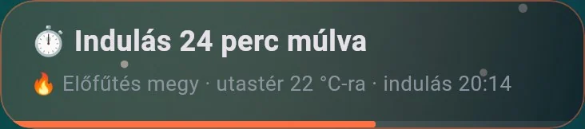
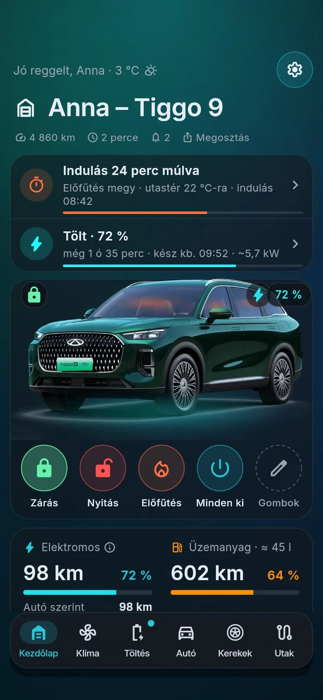
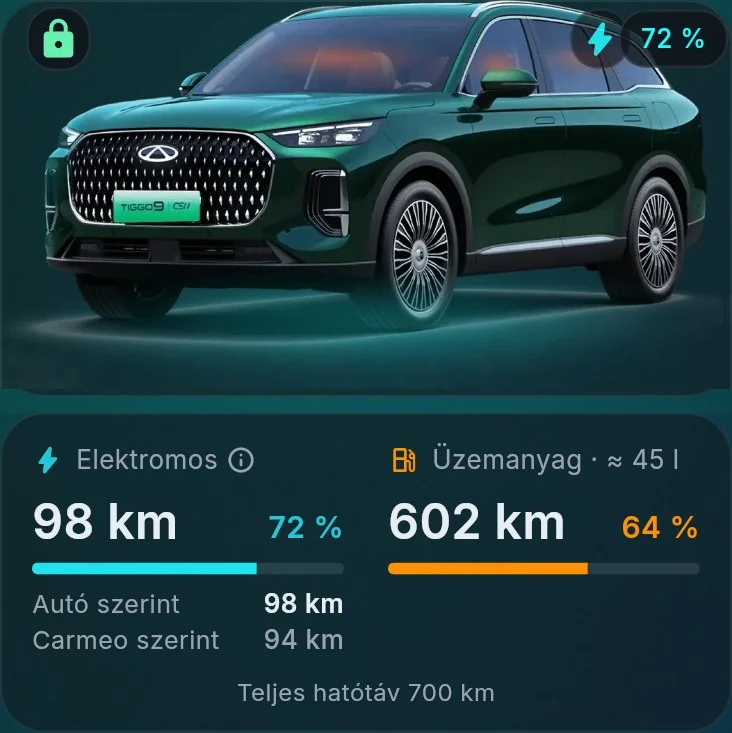
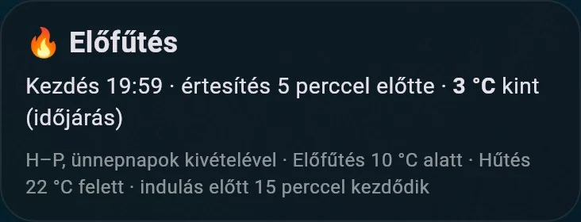
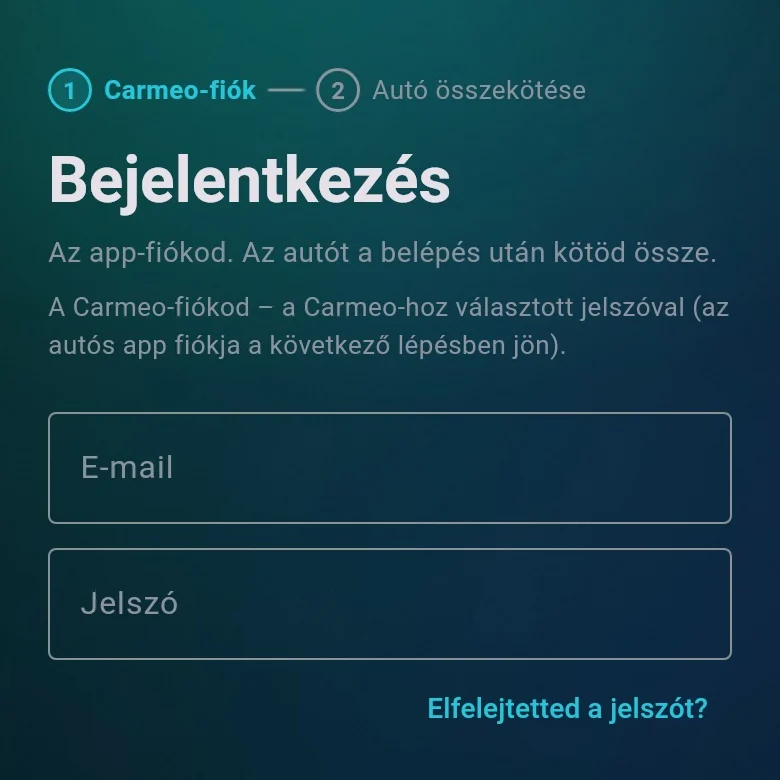
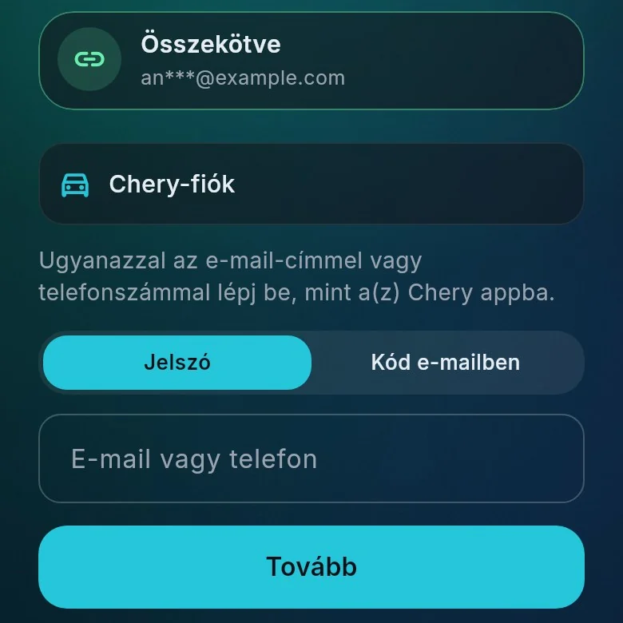
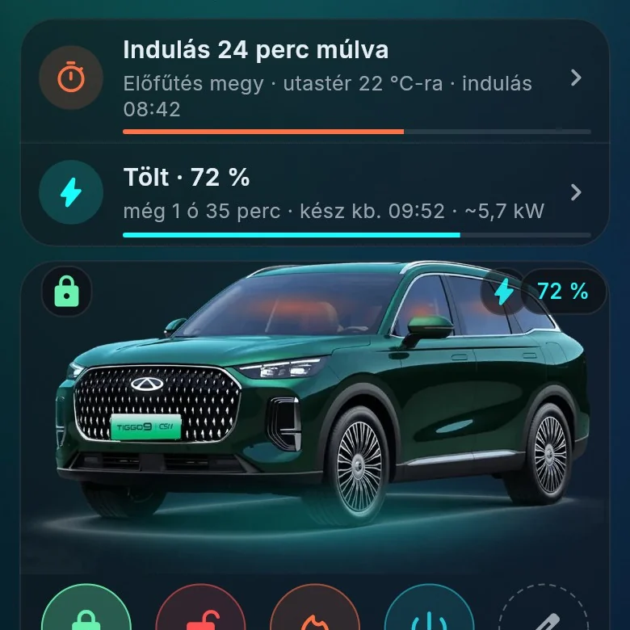

Chery-, Omoda- és Jaecoo-tulajdonosoknak
Az autód, egy pillantásra.
Akku, hatótáv, zárak és klíma egy helyen. Indulás előtt előfűt, naplózza az utakat és a töltéseket, és csak akkor szól, ha tényleg kell.
App Store és Google Play: hamarosan
- Ingyenes
- iPhone és Android
- Magyarul is
- Az adatok az EU-ban





Csatlakoztatott Chery, Omoda és Jaecoo autókkal működik – Tiggo 7, Tiggo 8, Tiggo 9 és továbbiak.
Funkciók
Minden, amit a hivatalos app mutat – és amit nem.
Minden egy pillantásra
Akku, tank, hatótáv, zárak, ajtók, ablakok, gumik és hol parkol – a saját autód a saját színében.
Részletek
Töltés részletesen
Élő töltési teljesítmény kW-ban, hátralévő idő, minden töltés naplója és az akkuba került energia.
Okos előfűtés
Add meg hétköznaponként az indulást – a Carmeo megnézi az előrejelzést, és időben fűt vagy hűt.

Távvezérlés
Zárás, nyitás, klíma, ülés- és kormányfűtés, páramentesítés – a kockázatosabbak előtt megerősítéssel.
Gumik, szerviz, dokumentumok
Guminyomás figyelmeztetéssel, következő szerviz dátum vagy kilométer szerint, matrica-, műszaki- és biztosítás-emlékeztető.
Részletek
Értesítés, ha számít
- Éjjeli fagy
- Nyitva maradt
- Kész a töltés
- Valaki elindult vele
Utak és útvonalak
Minden út térképen, a megtett távval, az elektromos aránnyal és a költséggel.
RészletekKöltségek és fogyasztás
Energia és üzemanyag utanként, minden út és töltés költsége a saját otthoni és nyilvános áraiddal, havi összesítés.
RészletekBeépített biztonság
Kétlépcsős belépés, távolról kiléptethető eszközök, Face ID vagy ujjlenyomat a nyitás előtt.
RészletekÚj az 1.7.0-ban
 A saját autód a saját színében, akku és hatótáv – alatta gombsor: zárás, előfűtés, hűtés, frissítés.
A saját autód a saját színében, akku és hatótáv – alatta gombsor: zárás, előfűtés, hűtés, frissítés.

Az appon túl
Az autód a zárolt képernyőn, nem egy appba temetve.
iPhone
- Widgetek a kezdő- és a zárolt képernyőn
- Live Activity a Dynamic Islandben
- Gombok a Vezérlőközpontban
- Apple Watch és CarPlay (élő tevékenységek)
Android
- Widgetek a kezdőképernyőn
- Gyorsbeállítás-csempék
- Élő töltésértesítés
A töltés, az előfűtés visszaszámlálása és a zár állapota ott van, ahová nézel – egy koppintás a záráshoz, az előfűtéshez vagy a hűtéshez.
Így működik
Három perc, és megy.
Telepítsd a Carmeót
Hozz létre ingyenes Carmeo-fiókot e-mail-címmel, Apple- vagy Google-fiókkal.

Csatlakoztasd az autót
Lépj be a Chery- vagy az OMODA | JAECOO-fiókoddal. Tipp: oszd meg az autót egy második fiókkal, így a hivatalos app is bejelentkezve marad.

Ennyi
A Carmeo éjjel-nappal figyeli az autót – vezetés és töltés közben 2 percenként, parkolva 10 percenként.

Adatvédelem és biztonság
A te autód, a te adataid.
A Carmeónak az autós fiókodra van szüksége, hogy elérje az autódat. Itt van pontosan, mi történik vele – és minden mással, amit az app tárol.
Adatvédelmi tájékoztatóAz autós fiókod jelszavát nem tároljuk
Egyszer használjuk a belépéshez az autó felhőjébe, utána törlődik.
A kulcsok és a PIN titkosítva
Az autódhoz tartozó belépési kulcsokat és a jármű PIN-kódját AES-256 titkosítással tároljuk.
Az EU-ban tárolva
Az adataid írországi és németországi szervereken vannak.
Nincs reklám, nincs analitika
Nincs profilalkotás és adatértékesítés. Az adataid csak az app működését szolgálják.
Szüneteltethető helyelőzmény
A helyrögzítést bármikor kikapcsolhatod – az utak ilyenkor helyek nélkül rögzülnek.
Export vagy törlés bármikor
Letöltheted mindazt, amit a Carmeo tárol, vagy törölheted a fiókodat és az összes naplót, közvetlenül az appból.
Mely autókkal működik a Carmeo?
Azokkal, amelyek Európában a hivatalos Chery vagy az OMODA | JAECOO appal működnek. A Tiggo 7, Tiggo 8 és Tiggo 9 modelleket a felhasználóink naponta használják.
Miért kell a Carmeónak az autós fiókom?
Az autód csak a gyártó online szolgáltatásával áll kapcsolatban. A Carmeo ugyanezt a szolgáltatást használja, a saját fiókodon keresztül – máshogy nem érhető el az autó. A jelszavadat egyszer használjuk a belépéshez, és soha nem tároljuk; a belépési kulcsokat titkosítva őrizzük.
Működik tovább a hivatalos app?
Az autós felhők fiókonként egy bejelentkezett appot engednek. Oszd meg az autót egy második fiókkal a hivatalos appban, és azt csatlakoztasd a Carmeóhoz – így mindkettő működik.
Lehet bajom belőle az autós fiókommal?
A Carmeo nem hivatalos alkalmazás, és a gyártók feltételei korlátozzák a más appokból történő hozzáférést – ezért korlátozhatják azt a fiókot, amelyik a Carmeót használja. Ezért javasoljuk, hogy ne a fő fiókodat, hanem egy második, megosztott fiókot csatlakoztass. A részletek a felhasználási feltételekben vannak.
Mi lesz, ha a gyártó változtat a szolgáltatásán?
Akkor előfordulhat, hogy egy funkció nem működik, amíg a Carmeo nem frissül. A Carmeo ugyanazokra az online szolgáltatásokra épül, mint a hivatalos app, és ezeket a gyártók bármikor megváltoztathatják.
Mennyire friss az adat?
Vezetés és töltés közben kb. 2 percenként, parkolva 10 percenként frissül. Parancs után azonnal.
Ébren tartja az autót, meríti az akkut?
Nem. A Carmeo azt olvassa ki, amit az autó már elküldött a gyártó online szolgáltatásának – a lekérdezés nem ébreszti fel az autót. A parancsok felébresztik, ugyanúgy, mint a hivatalos appban – és a Carmeo szólni tud, ha parkolás közben merül az akku.
Milyen nyelveken és mértékegységekkel használható?
Magyarul, angolul, románul és spanyolul. A költségek forintban, euróban, lejben vagy fontban, a távolság kilométerben vagy mérföldben, és van jobbkormányos nézet is.
A családom is használhatja?
Igen. Legfeljebb öt embert hívhatsz meg, mindenki a saját Carmeo-fiókjával lép be, és te döntöd el, ki mit tehet: csak nézheti, nézheti és kezelheti a klímát, vagy mindent. Az autó helyét csak akkor látják, ha bekapcsolod.
Kerül valamibe?
Nem. A Carmeo ingyenes.
Hogyan törölhetem az adataimat?
Az appban: Beállítások → Fiók → Fiók törlése – minden, ami a fiókhoz tartozik, azonnal törlődik. Előtte exportálhatod az adataidat. App nélkül: lásd a Fiók törlése oldalt.
Ki készíti a Carmeót?
Egy független, budapesti hobbifejlesztő, aki maga is Tiggo 9-cel jár. A Carmeo nem áll kapcsolatban az autógyártókkal, és nincs benne reklám.
Próbáld ki elsőként az újdonságokat.
A Carmeo nyílt tesztben van iPhone-on és Androidon. Ingyenes, és a visszajelzésedből lesznek az új funkciók.
iPhone – TestFlight
- Telepítsd az Apple ingyenes TestFlight appját az App Store-ból.
- Nyisd meg a meghívó linket az iPhone-odon, és telepítsd a Carmeót.
Android – Google Play
- Csatlakozz a tesztelői csoporthoz a Google-fiókoddal.
- Nyisd meg a tesztoldalt a Google Playen, és telepítsd a Carmeót.